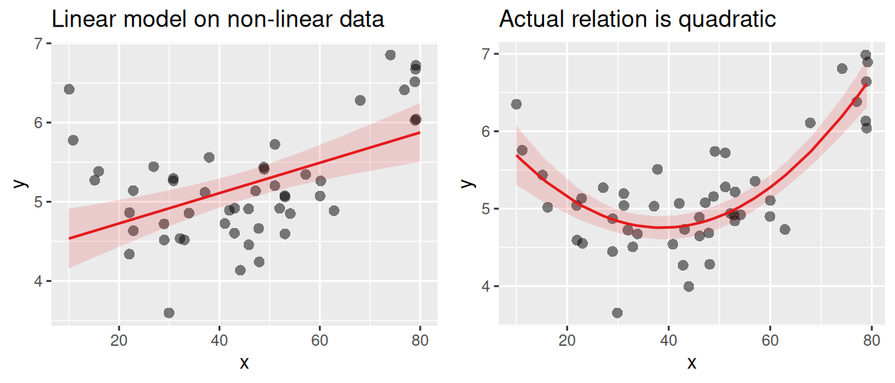
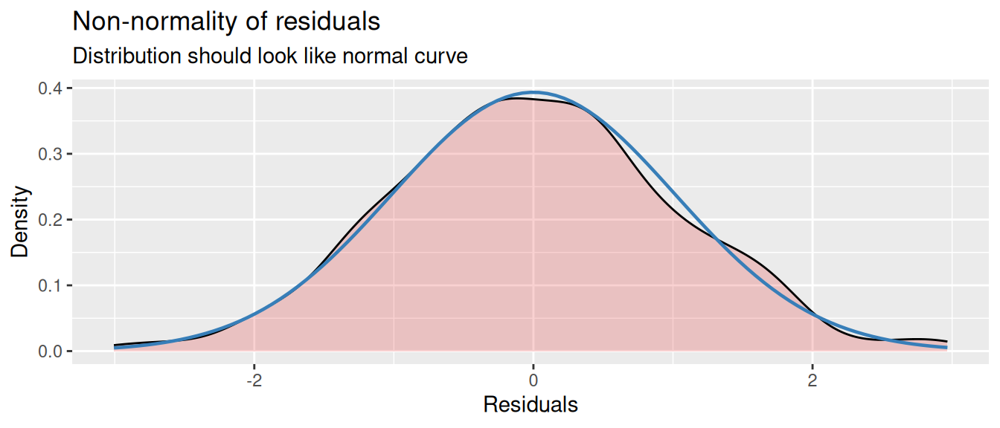
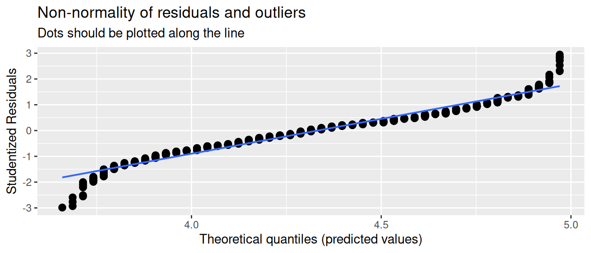
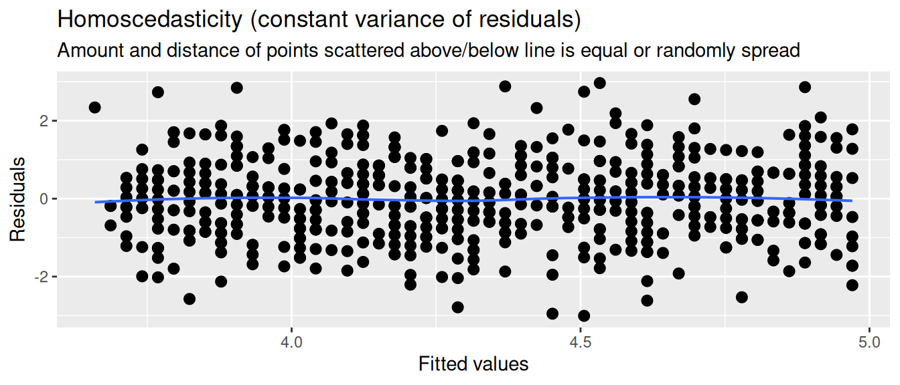
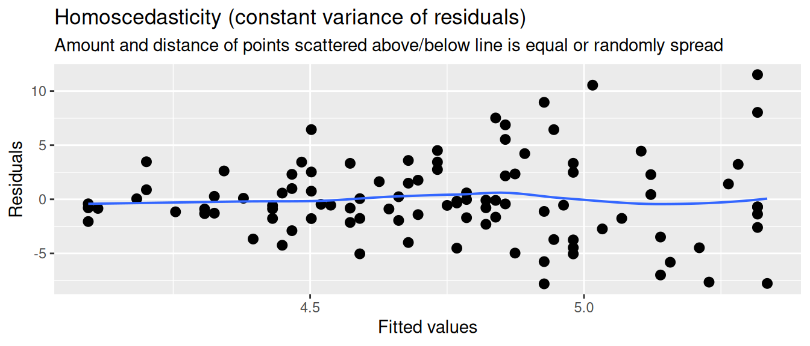

library(tidyverse)
library(sjPlot)
d <- read_csv("https://dev.dataliteracy.cc/practice_data.csv") |>
mutate(age = if_else(age > 100, 2024 - age, age)) |>
select(age, political_orientation, political_interest, trust_t1,
news_consumption = `news consumption`)
d5.6 Linear Model Assumptions
Model diagnostics, residuals, and assumptions.
You arrive here from Simple Regression, so you can already fit a linear model with one predictor. Here you’ll learn the assumptions behind that model — linearity, normality of residuals, outliers, equal variance, independence, and multicollinearity — and how to check each of them. If assumptions are badly violated, your estimates and p-values may mislead you, so checking them tells you how much to trust your model.
→ See this module in the skill tree
In the previous modules you fitted linear models. Here we show how to check whether the model you fitted is appropriate. We use the same (simulated) practice data as in Simple Regression and Multiple Regression.
5.6.1 Conditions and assumptions
Regression analysis is a very versatile tool that can be used in many different situations. However, there are some assumptions that need to be met in order to use it correctly. The most important assumptions are:
- Linearity: The relationship between the independent and dependent variable(s) should be linear.
- Normality: The residuals should be normally distributed.
- No outliers: Extreme values can have a large effect on the model.
- Homoscedasticity: The variance of the residuals should be constant.
- Independence: The observations should be independent of each other.
- No multicollinearity: In multiple regression, the independent variables should not be too highly correlated with each other.
Whether these assumptions are met is generally a grey area. It’s not a matter of “yes” or “no”, but rather a matter of “to what extent”. Let’s discuss some strategies for checking these assumptions.
Linearity
Remember that we are trying to fit a straight line through the data. If the relationship between the independent and dependent variable is not linear, then the model will not fit the data well. To check this assumption, you can plot the data and see if a straight line is a good fit. With the plot_model() function from the sjPlot package you can plot the predicted (type = "pred") values for an independent variable (terms = "age") on top of the data points (show.data = T, jitter = T1).
m <- lm(trust_t1 ~ age, data = d)
plot_model(m, type = "pred", terms = "age",
show.data = T, jitter = T)If you check this plot for our practice data, you’ll see that the relationship between age and trust_t1 is indeed linear. Let’s instead look at an example where the relationship is not linear. In the following plot the relation between age and happiness is quadratic, following a u-shape. Younger and older people tend to be happier than middle-aged people. A regular linear model (left) will not be able to capture this relationship well, and will therefore not fit the data well. On the right we fit a regression line to the actual relation.

Normality
The residuals of the model should be normally distributed. If you look at the figure of the regression model at the top of this tutorial, you can see how the residuals (the red lines) are distributed around the regression line. This distribution should be normal.
You can to some extend see whether this is the case using the same plot as above. But there are also special diagnostics plots that can help you with this. With the plot_model() function you can plot the residuals (type = "diag") of the model.
diag_plots <- plot_model(m, type = "diag")Warning: Using `size` aesthetic for lines was deprecated in ggplot2 3.4.0.
ℹ Please use `linewidth` instead.
ℹ The deprecated feature was likely used in the sjPlot package.
Please report the issue at <https://github.com/strengejacke/sjPlot/issues>.This creates a series of plots that show the residuals in different ways. What diagnostics plots are produced depends on the type of model you have. For regression we get three plots:
diag_plots[[1]]: Non-normality of residuals and outliersdiag_plots[[2]]: Non-normality of outliersdiag_plots[[3]]:Homoscedasticity
Let’s first focus on the second plot, which shows just the distribution of the residuals. The coloured area is a smoothed density plot of the residuals, and the blue line shows a proper bell curve for reference. If there is a clear difference between the two, then the residuals are not normally distributed.
diag_plots = plot_model(m, type="diag")
diag_plots[[2]]
No outliers in the residuals
Outliers can have a large effect on the model. Usually outliers in the residuals are related to outliers in the variables, which can be detected when inspecting and cleaning the data. For detecting outliers in the residuals, the Non-normality of residuals and outliers plot can be helpful. If there are outliers, they will show up as points that are far away from the line.
diag_plots[[1]]
Homoscedasticity
The residuals should have a constant variance. What we mean by this is that among the fitted values in the model, the variance of the residuals should not systematically increase or decrease. For instance, if in our model of age predicting trust the residuals are very small for young people, and very large for old people, then the model is not homoscedastic.
This can be checked with the Homoscedasticity plot. If the residuals are homoscedastic, then the residuals should be randomly distributed around the horizontal line.
diag_plots[[3]]
Now let’s look at an example where the variance of the residuals systematically increases with the fitted values. So the higher our prediction of trust_t1, the larger the residuals. We then say that the residuals are heteroscedastic.

Independence
Independence means that the residuals should not be related to each other. There are many ways in which this assumption can be violated.
One common case is data over time. If you’re measuring something over time, like a person’s number of social media followers, then it is very common that every observations is highly dependent on the previous observation. This is called autocorrelation (the variable correlates with itself). In order to use these data in a regression model, you need to use special techniques that take this autocorrelation into account. This area of statistics is called time series analysis.
Another common case is that your observations are nested within groups. For example, say your measuring the relation between social media use and happiness, and you gathered data from multiple countries. Observations nested in countries are not independent, because people within the same country tend to be more similar to each other than people from different countries. Some countries are overall happier, and some countries have more social media use. Country therefore could act as a confounder. To reduce the dependency between the residuals, you could control for countries using dummy variables, or use more advanced techniques like multilevel models.
No multicolinearity
Multicolinearity is a situation where two or more independent variables are highly correlated with each other. This can cause problems in the model, because the model cannot distinguish between the effects of the two variables. To check for multicolinearity, you can look at the correlation matrix of the independent variables (see the correlation tutorial). A rough rule of thumb is that if the correlation between two variables is higher than 0.5 you should be cautious, and if it’s higher than 0.8 you should be very worried.
You should try to avoid high correlations between independent variables where possible. If you have multiple variables that are highly correlated, they might be measuring a common factor, so you could consider combining them into a single variable (see the scale construction tutorial).
NoteThe variance inflation factor
A more appropriate way to check for multicolinearity is to use the variance inflation factor (VIF). Looking just at correlations is actually not good enough. The more accurate definition of multicolinearity is that one independent variable can be predicted by the other independent variables in the model. So looking at bi-variate correlations is not enough, because the prediction of one variable can be spread out over multiple other variables.
In R we can calculate the VIF of the variables in a model with the vif() function from the car package. This returns the VIF score for each independent variable. If the VIF is 1 or lower, we don’t have to worry about multicolinearity. If it’s higher than 5, we very likely have a problem. If it’s between 1 and 5, it’s a grey area, and you (as always) have to use your judgement.
library(car)Loading required package: carData
Attaching package: 'car'The following object is masked from 'package:dplyr':
recodeThe following object is masked from 'package:purrr':
somem <- lm(trust_t1 ~ age + news_consumption, data = d)
vif(m) age news_consumption
1.31206 1.31206 Footnotes
Jitter is a small amount of noise that is added to the data points to prevent them from overlapping in case their values are the same.↩︎